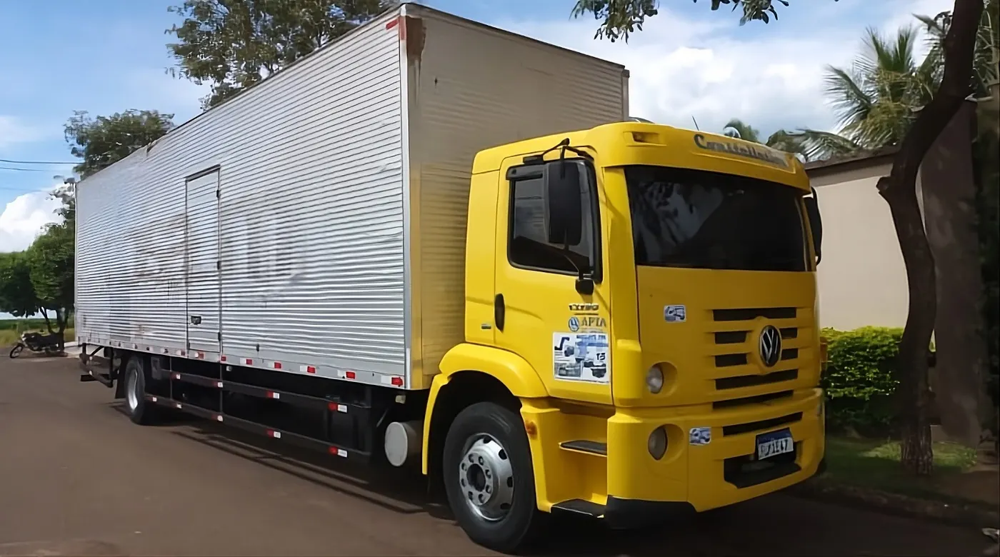

Locação de caminhões
Frota para diferentes necessidades de operação, com opções de veículos leves, médios e pesados.
Solicitar orçamento de locação
Sua operação não pode parar.
A JF Locações e Transportes oferece aluguel de caminhões (toco, pipa, baú, sider e bitruck) e transporte de cargas para empresas que precisam de segurança, agilidade e uma operação preparada para a estrada.
Escolha a solução que melhor atende à sua necessidade e fale com nossa equipe para receber uma proposta.
Frota para diferentes necessidades de operação, com opções de veículos leves, médios e pesados.
Solicitar orçamento de locaçãoSoluções para cargas fracionadas e fechadas, de acordo com o perfil e a rota da sua operação.
Atendimento pensado para empresas que precisam organizar transporte, veículos e operação.
Falar sobre logísticaToco, pipa, baú, sider e bitruck. Cada veículo tem página própria com indicações de uso.
Cabine amarela, carroceria baú
Ideal para entregas urbanas e rotas de curta e média distância.
Cabine e baú prata
Versátil para transporte de cargas diversas, oferecendo proteção e segurança durante todo o trajeto.
Cortinas laterais azuis
Ideal para transporte de cargas paletizadas e mercadorias que exigem praticidade e agilidade nas operações.
Carroceria de lona vermelha
Ideal para transporte de cargas de médio e grande porte, com maior capacidade de carga, estabilidade e eficiência.
Cabine branca, tanque de água
Indicado para transporte e distribuição de água em obras, empresas e diferentes tipos de operações.
Cabine vinho, tanque de água
Indicado para transporte e distribuição de água em obras, empresas e diferentes tipos de operações.
Cabine vermelha, baú branco
Ideal para entregas urbanas e rotas de curta e média distância.
Movimentação de insumos, produtos e cargas.
Distribuição e abastecimento de operações.
Rotas urbanas, regionais e de longa distância.
Opções de veículos para diferentes tipos de carga e operação.
Contato direto para entender a necessidade e encaminhar a solução.
Atuação no segmento desde 2006, conforme as informações atuais da empresa.
Um processo simples para solicitar orçamento e avançar com a contratação.
Um processo simples para entender sua necessidade e apresentar a solução adequada.
Conte o que sua operação precisa.
Nossa equipe avalia as informações e apresenta uma solução.
Alinhe condições e avance com a contratação.
Com a contratação concluída, sua operação entra em andamento.
Com sede em Aguaí - SP, a JF Locações e Transportes atende demandas de aluguel de caminhões e transporte de cargas. Consulte nossa equipe sobre disponibilidade, rotas e cobertura para sua necessidade.
Solicitar orçamentoOferecemos caminhão toco, pipa, baú, sider e bitruck, para diferentes tipos de carga e operação.
Preencha o formulário desta página, chame a equipe no WhatsApp (11) 99364-8272 ou ligue para (19) 3652-5075. Informe o tipo de serviço, o veículo, a origem e o destino e o período da operação.
Estamos na R. Beatriz Coimbra Alonso, nº 195, Jardim Bela Vista, em Aguaí - SP. Consulte nossa equipe sobre disponibilidade, rotas e cobertura.
O toco é um veículo de médio porte usado em entregas urbanas e rotas curtas e médias. O baú tem carroceria fechada. O sider tem cortinas laterais, que facilitam a carga de paletes. O bitruck atende cargas de médio e grande porte, com mais capacidade.
Atendemos operações de indústria, varejo e distribuição, em rotas urbanas, regionais e de longa distância.
Preencha os dados ao lado. Quanto mais informações você enviar, mais fácil será preparar o atendimento.
Os dados serão usados para direcionar seu atendimento.